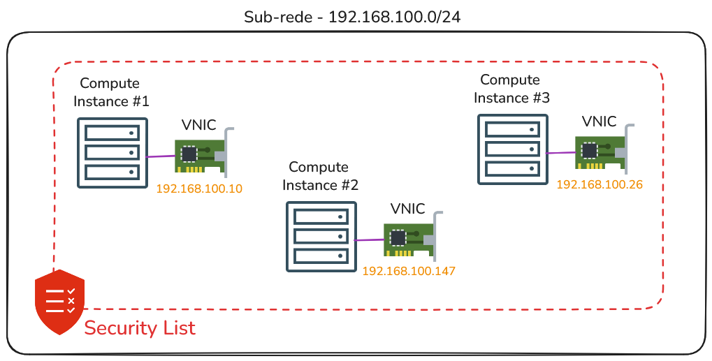
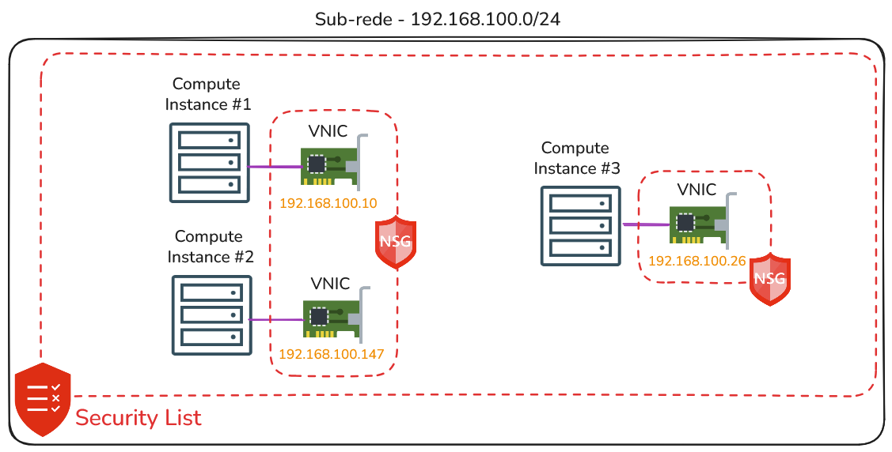

Security List vs. Network Security Group
O serviço de rede do OCI disponibiliza dois tipos de firewalls, nas camadas 3 e 4 do modelo OSI, para controle de tráfego de entrada (ingress) e saída (egress). O funcionamento de ambos é idêntico: todo tráfego é bloqueado por padrão até que encontre uma regra que permita sua passagem (ALLOW). São eles:
Security List
Esse é o firewall associado à sub-rede e aplicado a todas as suas VNICs. Como resultado, todo o tráfego de entrada (ingress) e saída (egress) é inspecionado com base nas regras definidas na Security List.

Toda sub-rede deve ter pelo menos uma security list e pode ter no máximo, cinco security lists empilhadas. Nesse caso, todas as Security Lists são avaliadas em conjunto na busca por uma regra que permita o tráfego (ALLOW).
$ oci network security-list update \
> --security-list-id "ocid1.securitylist.oc1.sa-saopaulo-1.aaaaaaaa" \
> --ingress-security-rules '[{
> "protocol": "6",
> "source": "0.0.0.0/0",
> "tcpOptions": {
> "destinationPortRange": {
> "min": 80,
> "max": 80
> }
> }
> }]' \
> --force
Network Security Group (NSG)
Este é o firewall que pode ser associado a uma VNIC ou a um grupo de VNICs. Nesse caso, a inspeção do tráfego é realizada no nível da VNIC, permitindo que cada VNIC possua suas próprias regras exclusivas para controle do tráfego.

$ oci network nsg create \
> --compartment-id "ocid1.compartment.oc1..aaaaaaaa" \
> --vcn-id "ocid1.vcn.oc1.sa-saopaulo-1.aaaaaaaa" \
> --display-name "web-nsg"
$ oci network nsg rules add \
> --nsg-id "ocid1.networksecuritygroup.oc1.sa-saopaulo-1.aaaaaaaa" \
> --security-rules '[{
> "direction": "INGRESS",
> "protocol": "6",
> "source": "0.0.0.0/0",
> "tcpOptions": {
> "destinationPortRange": {
> "min": 80,
> "max": 80
> }
> }
> }]'
$ oci network vnic update \
> --vnic-id ocid1.vnic.oc1.sa-saopaulo-1.aaaaaaaa \
> --nsg-ids '["ocid1.networksecuritygroup.oc1.sa-saopaulo-1.aaaaaaaa"]' \
> --force
Conntrack Table
Toda regra de segurança que for criada, seja uma regra de Security List ou Network Security Group (NSG), pode ser definida como sendo do tipo Stateful ou Stateless. Por padrão, as regras são criadas como Stateful.
Uma regra Stateful utiliza uma funcionalidade chamada Connection Tracking, que mantém informações sobre as conexões permitidas pelas Security Lists ou Network Security Groups (NSG).
Por exemplo, suponha que exista uma regra em uma Security List que permita tráfego de qualquer origem (0.0.0.0/0) com destino à porta 80/TCP. Após esse tráfego ser inspecionado e permitido, a Security List armazena em uma espécie de buffer, mais precisamente, em uma tabela, informações como o IP de origem, porta e protocolo de origem, IP de destino, porta e protocolo de destino (dados do socket da conexão). Essa tabela é chamada de Conntrack Table.
A Conntrack Table, no exemplo mencionado, é consultada quando há tráfego de retorno, ou seja, quando o recurso computacional envia uma resposta. Nesse momento, a Security List utiliza essa tabela para permitir automaticamente o tráfego de volta ao originador. Dessa forma, não é necessário avaliar as regras de egress para a resposta. Diz-se, então, que a Security List mantém o “estado da conexão” através da sua Conntrack Table, ou seja, realiza o Connection Tracking.
Já as regras do tipo Stateless não há Conntrack Table e, portanto, não existe limite ou tabela que mantém o estado das conexões. No entanto, para cada regra de entrada (ingress), é necessário definir também uma regra de saída (egress). Em outras palavras, é preciso configurar regras que permitam tanto o tráfego de entrada quanto o de saída (ida e volta). Do ponto de vista administrativo, configurar regras do tipo Stateless é mais trabalhoso, pois exige a definição de um maior número de regras.
A recomendação geral é: utilize regras do tipo Stateless em sub-redes que hospedam firewalls, load balancers públicos ou qualquer sub-rede que possa ter (ou tenha) alto volume de tráfego.
Compute Instance Firewall
Todo novo compute instance criado a partir de imagens de plataforma, como Oracle Linux ou Windows, já vem com o firewall do sistema operacional ativado por padrão. Nesse caso, apenas as portas administrativas são liberadas: 22/TCP para SSH no Linux e 3389/TCP para Remote Desktop (RDP) no Windows.
# systemctl status firewalld
● firewalld.service - firewalld - dynamic firewall daemon
Loaded: loaded (/usr/lib/systemd/system/firewalld.service; disabled; preset: enabled)
Active: active (running) since Mon 2026-01-23 10:59:46 GMT; 1s ago
Docs: man:firewalld(1)
Process: 7142 ExecStartPost=/usr/bin/firewall-cmd --state (code=exited, status=0/SUCCESS)
Main PID: 7139 (firewalld)
Tasks: 2 (limit: 22760)
Memory: 31.1M (peak: 52.5M)
CPU: 646ms
CGroup: /system.slice/firewalld.service
└─7139 /usr/bin/python3 -s /usr/sbin/firewalld --nofork --nopid
Jan 01 10:59:45 bastion systemd[1]: Starting firewalld - dynamic firewall daemon...
Jan 01 10:59:46 bastion systemd[1]: Started firewalld - dynamic firewall daemon.
A razão disso é permitir que apenas o usuário root em instâncias Linux ou usuários do grupo Administradores em instâncias Windows realizem conexões de saída para os endpoints da rede iSCSI (169.254.0.2:3260 e 169.254.2.0/24:3260).
Recomenda-se não remover esse serviço nem reconfigurar essas regras. Caso contrário, usuários sem privilégios de root ou de administrador poderão obter acesso ao boot volume da instância.